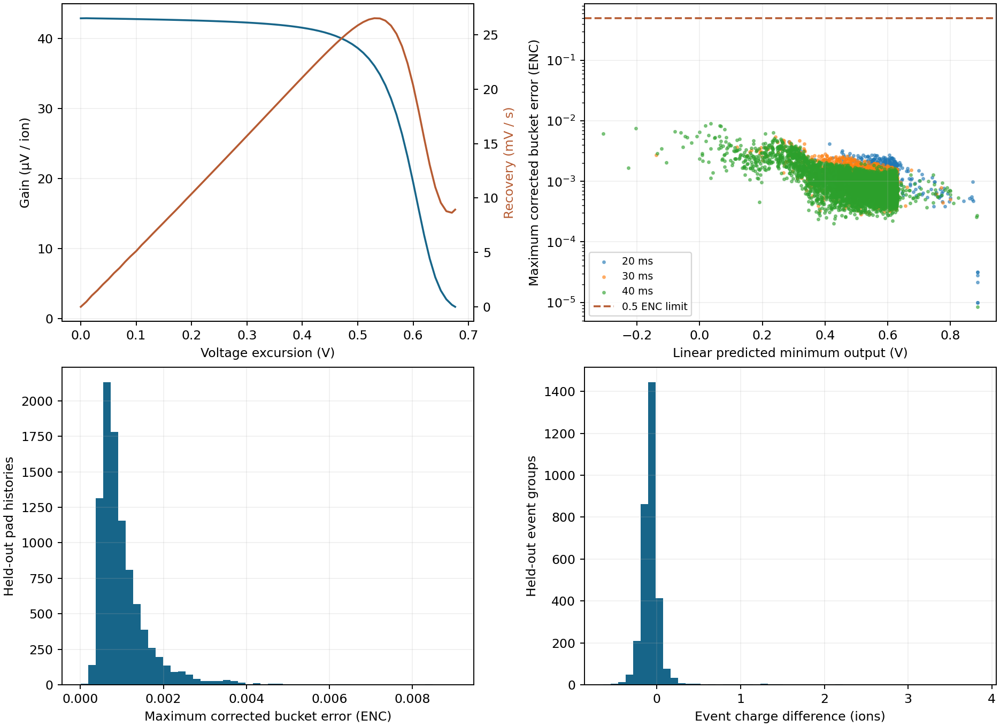
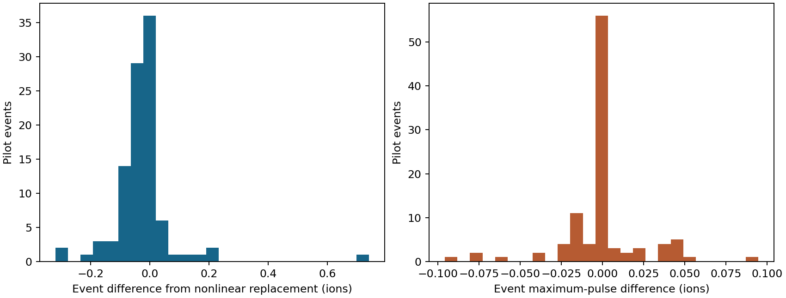

Validated. New production defaults to hybrid_nonlinear; hybrid_spice remains selectable.
Validated on 9,391 held-out pad histories across 20, 30 and 40 ms. 9,390 are inside the calibrated domain; 1 requires SPICE. Worst corrected-bucket error: 0.00903 ENC (limit 0.5 ENC). Maximum event-charge difference: 3.829 ions.
| Bucket (ms) | Histories | Fallbacks | Worst error (ENC) | Median error (ENC) | Median model (ms) |
|---|---|---|---|---|---|
| 20 | 502 | 1 | 0.00454 | 0.00150 | 1.99 |
| 30 | 2898 | 0 | 0.00547 | 0.00089 | 2.17 |
| 40 | 5991 | 0 | 0.00903 | 0.00077 | 2.02 |

The 100-event 4 mm pilot produced 8,460 linear, 138 fast nonlinear and 469 SPICE-control pad histories. Nonlinear replacement alone differs from saved SPICE by at most 0.00655 ENC per bucket and 0.741 ions per event. The 607 nonlinear evaluations, including control predictions, took 3.83 s. The filtered workflow took 104.0 s after preparation, including Julia startup, controls, refinement and reduction.
The 100-event pilot selects a different set of above-guard SPICE controls from the original 8,000-event run. Including that control-selection change gives a maximum bucket difference of 0.4154 ENC and a maximum event-total difference of 199.018 ions (mean -53.175 ions). The event maximum-pulse difference is 0.096 ions. The model-only comparison isolates the nonlinear replacement; the held-out calibration comparison uses identical histories.

x = baseline_V - Vout dx/dt = gain(x) * I(t)/e - recovery(x) x(0) = 0
Continuous piecewise-linear gain and recovery tables, fitted to 240 SPICE histories with disjoint validation events. Propagation starts at equilibrium and follows the complete finite-path input current and quiet tail. RK4 stops at input knots and acquisition-window edges; maximum step is 100 µs. The existing 5 ms averaging window, three-frame inverse and stationary temporal noise covariance are retained.
The validated excursion extends to 0.675908 V and input current to 77.798 fA. The same 0.63 V selection guard applies. Controls use SPICE; histories outside the calibrated domain use SPICE. The largest timestep-refinement difference was 0.0000350 ENC. The geometry/current prescription and circuit hashes are checked before execution.
Production HDF5 retains signed estimates and full noise covariance. Model codes: 0 linear, 1 SPICE, 2 calibrated nonlinear. Run identity includes calibration contents. Identical noise is used when comparing model effects; independent production identities obtain their own deterministic noise realizations.
make ion-csa-nonlinear-pilot make ion-csa-nonlinear-report
Set response_model = "hybrid_spice" in the production run card for the reference mode. Numerical evidence lives under results/ion_csa_nonlinear/v1/. PDF report · Interfaces and development model